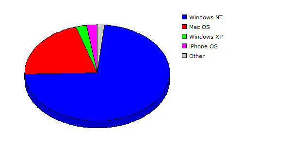

| Rank |
Operating System |
Hits |
Visitors |
| 1 |
Windows NT |
129032 |
69.60% |
6400 |
72.74% |
| 2 |
Mac OS |
26355 |
14.22% |
1832 |
20.82% |
| 3 |
Windows XP |
26365 |
14.22% |
214 |
02.43% |
| 4 |
iPhone OS |
1369 |
00.74% |
207 |
02.35% |
| 5 |
Linux |
863 |
00.47% |
66 |
00.75% |
| 6 |
Windows Vista or Windows Server 2008 |
951 |
00.51% |
49 |
00.56% |
| 7 |
Windows Server 2003 |
380 |
00.20% |
20 |
00.23% |
| 8 |
Windows |
13 |
00.01% |
5 |
00.06% |
| 9 |
FreeBSD |
34 |
00.02% |
2 |
00.02% |
| 10 |
Windows 2000 |
2 |
00.00% |
2 |
00.02% |
| 11 |
Red Hat |
32 |
00.02% |
1 |
00.01% |
| |
Total |
185396 |
8798 |
|
Description: This report contains statistics about the operating systems that your visitors use.
|
|